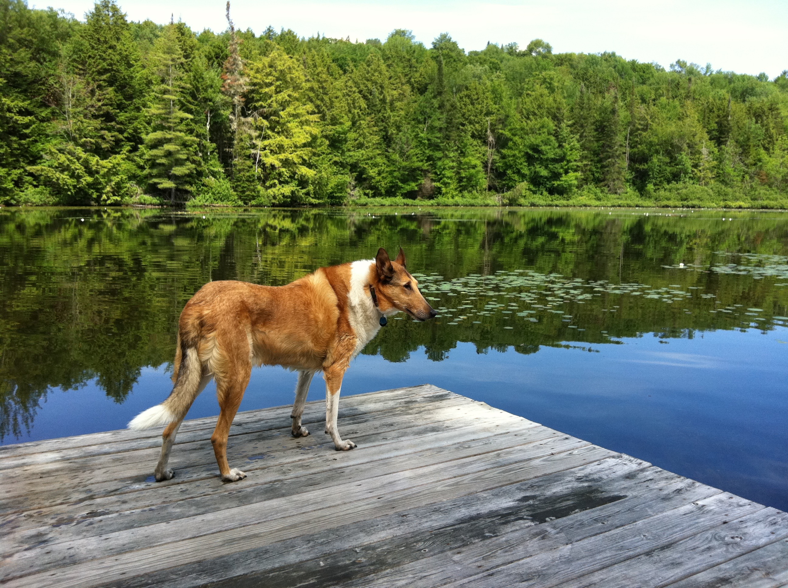

Vermont is the place I consider myself to have grown up in, in the capitol of Montpelier. My family moved there when I was two years old and it's also where my brother was born. My parents and myself have always loved Vermont, for its beuaty and connections it holds to my family. Vermont influenced me tremendously growing up, especially in terms of being introduced to a lot of my passions such as fishing, baseball, skiing, and nature. I consider myself extremely lucky to have grown up in such a place.